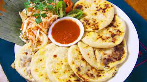

Salvadorian Pupusa

A pupusa is a thick griddle cake or flatbread from El Salvador and Honduras, made with cornmeal or rice flour, similar to the Colombian and Venezuelan arepa
A pupusa is a handmade maize or rice tortilla stuffed with ingredients. Stuffing can include cheese, refried beans, squash, loroco, and chicharrón.
Ingredients for the corn dough:
- 500 grams of cornmeal
- 1½ cups of water (360 milliliters)
Ingredients for the refried beans
- 250 grams of cooked beans
- 1 piece of onion
- 1 clove garlic
- 2 tablespoons of oil
- 200 grams of mozzarella cheese
Steps for the corn dough:
- Slowly pour the cornmeal into the warm water and mix until lumps disappear
Steps for th refried beans:
- Fry the onion in oil
- Once it is half burned, remove it and add the beans
- Leave it on low heat for 10 minutes and mix constantly
- Add the mozzarella cheese and mix
Final steps:
- Make a ball of dough in the palm of your hand like a golf ball and flatten it
- Place the refried beans in the middle and reform the ball, taking special care that the beans are enclosed in the ball and do not come out
- Re-flatten to a round shape
- Place on the griddle over medium heat
- When cooked on one side, flip it
- Serve it